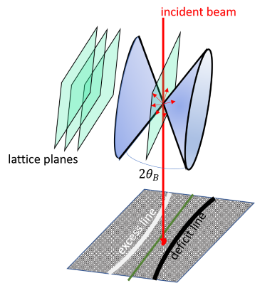
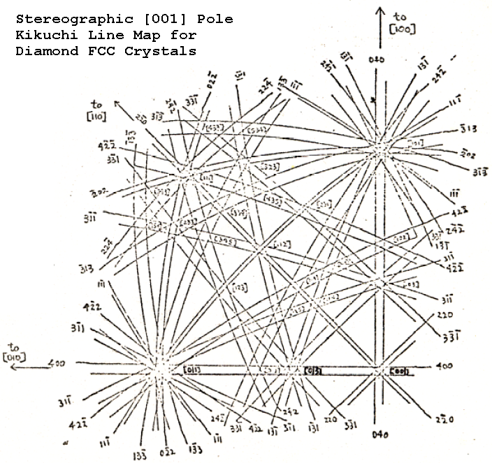
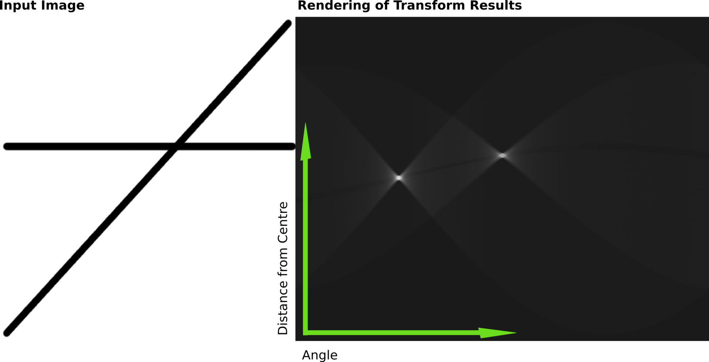

Chapter 2: Diffraction
Kikuchi Lines¶

part of
MSE672: Introduction to Transmission Electron Microscopy
Spring 2026 by Gerd Duscher
Microscopy Facilities Institute of Advanced Materials & Manufacturing Materials Science & Engineering The University of Tennessee, Knoxville
Background and methods to analysis and quantification of data acquired with transmission electron microscopes
Load relevant python packages¶
Check Installed Packages¶
[ ]:
import sys
import importlib.metadata
def test_package(package_name):
"""Test if package exists and returns version or -1"""
try:
version = importlib.metadata.version(package_name)
except importlib.metadata.PackageNotFoundError:
version = '-1'
return version
if test_package('pyTEMlib') < '0.2026.1.2':
print('installing pyTEMlib')
!{sys.executable} -m pip install pyTEMlib -q --upgrade
print('done')
Load the plotting and figure packages¶
Import the python packages that we will use:
Beside the basic numerical (numpy) and plotting (pylab of matplotlib) libraries, some libraries from the pyTEMlib
kinematic scattering
diffraction_plot
included in diffraction_tools library
[ ]:
%matplotlib widget
import matplotlib.pyplot as plt
import numpy as np
import sys
if 'google.colab' in sys.modules:
from google.colab import output
output.enable_custom_widget_manager()
# Import libraries from the pyTEMlib
import pyTEMlib
__notebook_version__ = '2026.01.11'
print('pyTEM version: ', pyTEMlib.__version__)
print('notebook version: ', __notebook_version__)
Kikuchi Pattern¶
An electron can be scattered elastically into the Bragg angle, or it can be scattered inelastically
The inelastically scattered electrons are emitted in all directions.
These inelastically scattered electrons are then diffracted at the crystal planes according to Bragg’s law.

This results in a cone, where the Bragg diffraction is allowed; this cone is called Kossel cone. Because the electrons are predominantly scattered in the direction of the incident beam, this Bragg diffraction will take some intensity out of the original beam (dark line: deficit line in the figure )and transfer it to a different angle (bright band: excess line in the figure. Inside this bands is some intensity which depends on the dynamic scattering.
The most important feature of the Kikuchi band is that the Kossel cones are fixed to the crystal and allow easy navigation in reciprocal space, because nothing changes with the angle (the excitation error and thickness changes for SAD patterns). A common example if you want to tilt out of a zone axis, but you also want to keep an interface edge on; you just follow the Kikuchi band of the interface plane.
Note: >the Kikuchi bands are bent, they just appear straight, because the Ewald sphere is so large.
Note: >According to the explanation above, no Kikuchi lines should be visible if we are in a low order zone axis. This is not true because of the channeling effect and dynamic scattering, but these effects do not change anything about the location, where we expect the Kikuchi lines.
Constructing Kikuchi Maps¶
Define crystal¶
[ ]:
### Please choose another crystal like: Silicon, Aluminium, GaAs , ZnO
atoms = pyTEMlib.crystal_tools.structure_by_name('silicon')
atoms
Plot the unit cell¶
Just to be sure the crystal structure is right
[39]:
from ase.visualize.plot import plot_atoms
plot_atoms(atoms, radii=0.3, rotation=('0x,4y,0z'))
[39]:
<Axes: xlabel='angle (mrad)'>
Parameters for Diffraction Calculation¶
Please note that we are using a rather small number of reflections: the maximum number of Miller indices > maximum hkl is 1
[40]:
tags = {'acceleration_voltage_V': 20.0 *1000.0, #V
'convergence_angle_mrad': 0,
'zone_hkl': np.array([1, 1, 0]), # incident neares zone axis: defines Laue Zones!!!!
'Sg_max': 0.05, # 1/Ang maximum allowed excitation error ; This parameter is related to the thickness
'hkl_max': 1 } # Highest evaluated Miller indices
Calculation¶
[41]:
diff_dict = pyTEMlib.diffraction_tools.get_bragg_reflections(atoms, tags, verbose=False)
The results are in the info attribute as a dictionary in atoms.info[‘diffraction’]
Plot Selected Area Electron Diffraction Pattern¶
[42]:
# ########################
# Plot ZOLZ SAED Pattern #
# ########################
# Get information as dictionary
diffraction = diff_dict
#We plot only the allowed diffraction spots
points = pyTEMlib.diffraction_tools.plotting_coordinates(diffraction['allowed']['g'])
print(points)
# we sort them by order of Laue zone
ZOLZ = diffraction['allowed']['ZOLZ']
print(diffraction['allowed']['Laue_Zone'])
# Plot
fig = plt.figure()
ax = fig.add_subplot(111)
# We plot the x,y axis only; the z -direction is set to zero - this is our projection
ax.scatter(points[:,0], points[:,1], c='red', s=40)
# zero spot plotting
ax.scatter(0,0, c='red', s=100)
ax.scatter(0,0, c='white', s=40)
ax.set_aspect('equal')
FOV = 12
plt.ylim(-FOV,FOV); plt.xlim(-FOV,FOV);
[[-9.63626132 6.81386572]
[-9.63626132 -6.81386572]
[ 9.63626132 6.81386572]
[ 9.63626132 -6.81386572]]
[0. 0. 0. 0.]
Kikuchi Line Construction¶
The Kikuchi lines are the Bisections of lines from the center spot to the Bragg spots.
The line equation for a bisection of a line between two points \((A(x_A,y_A), B(x_B,y_B))\) is given by the formula:
\(y=-\frac{x_A-x_B}{y_A-y_B}x+\frac{x_A^2-x_B^2+y_A^2-y_B^2}{2 \cdot(y_A-y_B)}\)
If \(y_A = y_B\), then x is constant at \(x= \frac{1}{2} (x_A+x_B)\)
In our case point \(B\) is \((0,0)\) and so above equation is:
\(y=-\frac{x_A}{y_A}x+\frac{x_A^2+y_A^2}{2 y_A}\)
If \(y_A\) is zero, the line is horizontal and $ x$ is constant at \(x= \frac{1}{2} x_A\).
matplotlib is doing his job for us.
A line is also uniquely defined by the point closest to the origin and it’s slope.
The slope is the tangens of the angle with the x-axis.
[43]:
pointsZ = points[ZOLZ]
g = pointsZ[1,0:2]
FOV = 12
slope = -g[0]/g[1]
# Plot
fig = plt.figure()
ax = fig.add_subplot(111)
# We plot the x,y axis only; the z -direction is set to zero - this is our projection
ax.scatter(points[ZOLZ,0], points[ZOLZ,1], c='red', s=20 , alpha = .3)
ax.scatter(g[0], g[1], c='red', s=40)
# Draw kikuchi
ax.axline((g[0]/2, g[1]/2), slope=slope, c='r')
ax.text(g[0]/2-1,g[1]/2-1, 'Kikuchi',color ='r', rotation=37-90)
ax.plot([0,g[0]],[0,g[1]],c='black')
# zero spot plotting
ax.scatter(0,0, c='red', s=100)
ax.scatter(0,0, c='white', s=40)
ax.set_aspect('equal')
plt.ylim(-FOV,FOV); plt.xlim(-FOV,FOV); plt.show()
plt.ylabel('angle (1/$\AA$)' );
Assume we have an SAD pattern, from experiment or simulation. Draw a line from the center to each ZOLZ diffraction spot and draw a line perpendicular to the first line at half the distance. We name the line with the same Miller indices as the spot. The distance between two pair of lines is then again \(|\vec{g}|\) of the original spots.
If we know in which direction the next low order zone axis is and how far we have to tilt to get to it, we can draw that pole too.
This is much easier with a line equation, knowing that \(\vec{g}/2\) is a point halfway between the Bragg reflection and zero. The slope is then tan of the direction + \(90^\circ\). or the negative slope as before
[44]:
pointsZ = points[ZOLZ]
g = pointsZ[0,0:2]
m = -g[0]/g[1]
# Plot
fig = plt.figure()
ax = fig.add_subplot(111)
# We plot the x,y axis only; the z -direction is set to zero - this is our projection
ax.scatter(points[ZOLZ,0], points[ZOLZ,1], c='red', s=20 , alpha = .3)
ax.scatter(g[0], g[1], c='red', s=40)
ax.axline( g[:2]/2, slope=m, color='r')
ax.text(g[0]/2,g[1]/2+1, 'Kikuchi', color='r', rotation=52)
ax.plot([0,g[0]],[0,g[1]],c='black')
# Make right angle symbol
ax.scatter(g[0]/2, g[1]/2)
#ax.plot([g[0]/2*.09, g[0]/2*.9+.01], [g[1]/2*.9,g[1]/2*.9+.01],c='black')
#ax.plot([g[0]/2*.9, g[0]/2*.9+.01],[g[1]/2*1.1,g[1]/2*1.1-.01],c='black')
# zero spot plotting
ax.scatter(0,0, c='red', s=100)
ax.scatter(0,0, c='white', s=40)
ax.set_aspect('equal')
plt.ylim(-FOV,FOV); plt.xlim(-FOV,FOV); plt.show()
Plotting of Kikuchi Pattern¶
[45]:
pointsZ = points[ZOLZ]
g = pointsZ[:,0:2]
slope = -g[:,0]/g[:,1]
# Plot
fig = plt.figure()
ax = fig.add_subplot(111)
# We plot the x,y axis only; the z -direction is set to zero - this is our projection
ax.scatter(points[ZOLZ,0], points[ZOLZ,1], c='red', s=20 )
for spot in g:
ax.axline( spot[:2]/2, slope=(-spot[0]/spot[1]), color='r')
# zero spot plotting
ax.scatter(0,0, c='red', s=100)
ax.scatter(0,0, c='white', s=40)
ax.set_aspect('equal')
FOV = 16
plt.ylim(-FOV,FOV); plt.xlim(-FOV,FOV); plt.show()
Plotting of Whole Kikuchi Pattern¶
with a few more Bragg peaks, so please increase hkl_max and see what happens!
[46]:
# ------- Input -----------
hkl_max = 3
# -------------------------
tags['hkl_max'] = hkl_max
tags['crystal_name'] = 'silicon'
atoms = pyTEMlib.crystal_tools.structure_by_name('Si')
tagsD = pyTEMlib.diffraction_tools.get_bragg_reflections(atoms, tags, verbose=True)
#We plot only the allowed diffraction spots
points = pyTEMlib.diffraction_tools.plotting_coordinates(tagsD['allowed']['g'])
# we sort them by order of Laue zone
ZOLZ = tagsD['allowed']['ZOLZ']
pointsZ = points[ZOLZ]
g = pointsZ[:,0:2]
# Plot
fig = plt.figure()
plt.title(f" {tags['crystal_name']} in {tags['zone_hkl']}")
ax = fig.add_subplot(111)
plt.scatter(g[:,0], g[:,1])
# We plot the x,y axis only; the z -direction is set to zero - this is our projection
for spot in g:
ax.axline( spot[:2]/2, slope=(-spot[0]/spot[1]), color='r')
# zero spot plotting
ax.scatter(0,0, c='red', s=100)
ax.scatter(0,0, c='white', s=40)
ax.set_aspect('equal')
# plt.ylim(-FOV,FOV); plt.xlim(-FOV,FOV); plt.show()
Of the 48 possible reflection 18 are allowed.
Of those, there are 18 in ZOLZ and 0 in HOLZ
Of the 30 forbidden reflection in ZOLZ 6 can be dynamically activated.
Plotting of Whole Kikuchi Pattern with kineamtic_scattering Library¶
[49]:
# -------- input ---------------
crystal_name = 'SrTiO3'
zone_axis = [0, 0, 1]
# ----------------------------
atoms = pyTEMlib.crystal_tools.structure_by_name(crystal_name)
tags = {'crystal_name': crystal_name,
'acceleration_voltage': 200.0 *1000.0, #V
'convergence_angle': 1,
'Sg_max': .03, # 1/Ang maximum allowed excitation error ; This parameter is related to the thickness
'hkl_max': 4, # Highest evaluated Miller indices
'zone_hkl': np.array(zone_axis),
'mistilt_alpha': .0, # -45#-35-0.28-1+2.42
'mistilt_beta': 0.,
'plot_FOV': 2}
diff_dict ={}
diff_dict = pyTEMlib.diffraction_tools.get_bragg_reflections(atoms, tags, verbose=True)
rotation = 0
ZOLZ = diff_dict['allowed']['ZOLZ']
xy = pyTEMlib.diffraction_tools.plotting_coordinates(diff_dict['allowed']['g'][ZOLZ],
rotation=rotation,
feature='spot')
kikuchi = pyTEMlib.diffraction_tools.plotting_coordinates(diff_dict['Kikuchi']['g'],
rotation=rotation,
laue_circle=diff_dict['Laue_circle'],
feature='line')
plt.figure()
plt.scatter(xy[:, 0], xy[:,1], color = 'r')
for line in kikuchi:
plt.axline( (line[0], line[1]),slope=line[2], linewidth = 2)
plt.gca().set_aspect('equal');
Of the 80 possible reflection 80 are allowed.
Of those, there are 80 in ZOLZ and 0 in HOLZ
Of the 0 forbidden reflection in ZOLZ 0 can be dynamically activated.
[50]:
diff_dict['output']= pyTEMlib.diffraction_tools.plot_saed_parameter()
diff_dict['output'].update({'plot Kikuchi': True,
'color Kikuchi': 'navy',
'background': 'gray',
'label size': 12,
'plot shift x': 0,
'plot shift y': 0,
'image gamma': 2,
'label color': 'skyblue',
'color zero': 'white',
'plot_labels': False})
############
## OUTPUT
############
v = pyTEMlib.diffraction_tools.plot_diffraction_pattern(diff_dict)
#plt.gca().set_xlim(-2,2)
#plt.gca().set_ylim(-2,2)
Mistilt in Kikuchi Pattern¶
Becasue Kikuchi pattern are directly fixed to the crystal any mistiolt can immediately be detected
[70]:
# -------Input ------ #
crystal_name = 'SrTiO3'
zone_axis = [0, 0, 1]
mistilt_alpha = 0.75 # in degree
mistilt_beta = 0
# ------------------- #
# Crystal unit cell defintion
atoms = pyTEMlib.crystal_tools.structure_by_name(crystal_name)
tags = {'crystal_name': crystal_name,
'acceleration_voltage': 200.0 *1000.0, #V
'convergence_angle': 3.,
'Sg_max': .01, # 1/Ang maximum allowed excitation error ; This parameter is related to the thickness
'thickness': 0, # in Ang
'hkl_max': 11, # Highest evaluated Miller indices
'zone_hkl': np.array(zone_axis),
'mistilt_alpha': np.radians(mistilt_alpha),
'mistilt_beta': np.radians(mistilt_beta),
'plot_FOV': 2}
diff_dict ={}
diff_dict = pyTEMlib.diffraction_tools.get_bragg_reflections(atoms, tags, verbose=True)
diff_dict['output'] = pyTEMlib.diffraction_tools.plot_saed_parameter()
diff_dict['output'].update({'plot Kikuchi': True,
})
############
## OUTPUT
############
v = pyTEMlib.diffraction_tools.plot_diffraction_pattern(diff_dict)
#plt.gca().set_xlim(-2, 2)
#plt.gca().set_ylim(-2, 2)
mistilt
Of the 48 possible reflection 48 are allowed.
Of those, there are 48 in ZOLZ and 0 in HOLZ
Of the 0 forbidden reflection in ZOLZ 0 can be dynamically activated.
Kikuchi Maps¶
Extremly helpfull for tilting a sample to a different zone axis are maps of Kikuchi pattern as the one below.

If you are in a specific zone axis, which we identify by its symmetry (like the SAED
Kikuchi Lines and Excitation Error¶
Since the Kikuchi lines are rigidly attached to the crystal, we can use them to measure the excitation error. The diffraction geometry is shown in the figure above. If \(\vec{s}_g = 0\) the deficient line of a Kikuchi band (a pole) lays in the origin. If we tilt the sample so that the whole band shifts to the bright line, then the excitation error is positive. The angle \(\eta\) (which is equal to \(\epsilon\)) is related to the excitation error by simple trigonometry: \begin{eqnarray} \eta &=& \frac{x}{L}= \frac{x \lambda}{R d}\\ \epsilon &=& \frac{s}{g}\\ s &=& \epsilon = \frac{x}{L}g = \frac{x}{Ld}\\ \frac{R}{L}&=& 2\theta_B=\frac{\lambda}{d}\\ s&=& \frac{xL}{d}=\frac{x}{d}\cdot\frac{\lambda}{Rd}\\ s&=& \frac{x\lambda}{R d^2}=\frac{x}{R}\lambda g^2 \end{eqnarray}
[73]:
# --- Input -----
s_g= .05 # in 1/Ang
# ---------------
plt.figure()
from pyTEMlib import animation
animation.deficient_kikuchi_line(s_g= s_g)
Principle of excitation error determination. You can use this to obtain exact Bragg (s_g=0) conditions in your diffraction pattern.
Conclusion¶
The Kikuchi lines are directly related to the Bragg reflections and therefore show the same symmetry as the diffraction pattern.
Appendix¶
An Excursion to Hough space¶
The line can be defined by
its end points
intersection with y and slope or
closest distance to origin and angle with x-axis.
The latter is called Hough Space and when we look at the Kikuchi construction we see that this is easily accomplished in that case:
The closest distance to origin is half the distance to the Bragg reflection.
The angle between the x-axis and the angle to the Bragg reflection plus 90\(^o\) is the Hough line angle
That means that polar coordinates and Hough space are closely related
[ ]:
points_polar = np.array([np.linalg.norm(points[:,:2], axis=1), np.arctan2(points[:,1],points[:,0])], dtype=float).T
points_polar
[ ]:
def hough2cartesian(points_polar, maxlength = .4):
""" converts polar coordinates to lines and cartesian points """
dist = points_polar[:, 0]
angle = points_polar[:, 1]
(x0, y0) = dist/2 * np.array([np.cos(angle), np.sin(angle)])
h_xp = x0 + maxlength * np.cos(angle- np.pi/2)
h_yp = y0 + maxlength * np.sin( angle-np.pi/2)
h_xm = x0 - maxlength * np.cos( angle-np.pi/2)
h_ym = y0 - maxlength * np.sin( angle-np.pi/2)
return h_xp, h_yp, h_xm, h_ym, x0*2, y0*2
def cartesian2hough(points, maxlength = .4):
""" converts cartesian coordinates to lines and polar points """
dist = np.linalg.norm(points[:,:2], axis=1)
angle = np.arctan2(points[:,1],points[:,0])
h_xp = points[:,0]/2 + maxlength * np.cos(angle-np.pi/2)
h_yp = points[:,1]/2 + maxlength * np.sin(angle-np.pi/2)
h_xm = points[:,0]/2 - maxlength * np.cos(angle-np.pi/2)
h_ym = points[:,1]/2 - maxlength * np.sin(angle-np.pi/2)
return h_xp, h_yp, h_xm, h_ym, dist, angle
points_polar = np.array([np.linalg.norm(points[:,:2], axis=1), np.arctan2(points[:,1],points[:,0])], dtype=float).T
hxp,hyp,hxm,hym, x0, y0 = hough2cartesian(points_polar)
plt.figure()
plt.scatter(x0, y0, c='red', s=20 , alpha = .3),
plt.scatter(0, 0, c='red', s=20 , alpha = .8),
for i in range(len(hxm)):
plt.plot([hxm[i], hxp[i]], [hym[i], hyp[i]])
plt.gca().set_aspect('equal')
Polar coordinates allow us to rotate the diffraction pattern quite easily, just add a fixed value to the angle part of the coordinates
[ ]:
# ------Input -----
rotation_angle = 10 # in degree
# -----------------
points_polar = np.array([np.linalg.norm(points[:,:2], axis=1), np.arctan2(points[:,1],points[:,0])], dtype=float).T
points_polar[:,1] -= np.deg2rad(rotation_angle)
hxp,hyp,hxm,hym, x0, y0 = hough2cartesian(points_polar)
plt.figure()
plt.scatter(x0, y0, c='red', s=20 , alpha = .3),
plt.scatter(0, 0, c='red', s=20 , alpha = .8),
for i in range(len(hxm)):
plt.plot([hxm[i], hxp[i]], [hym[i], hyp[i]])
plt.gca().set_aspect('equal')
Hough-Transform¶
From Wikipedia

[ ]: